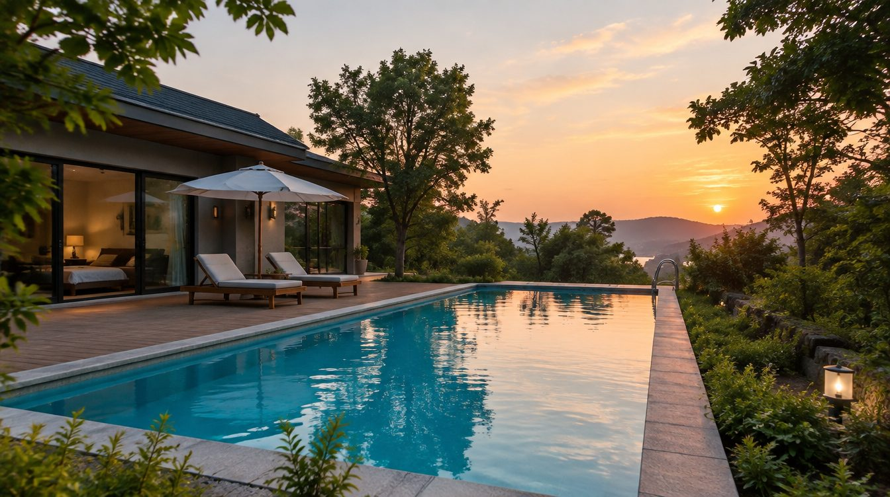
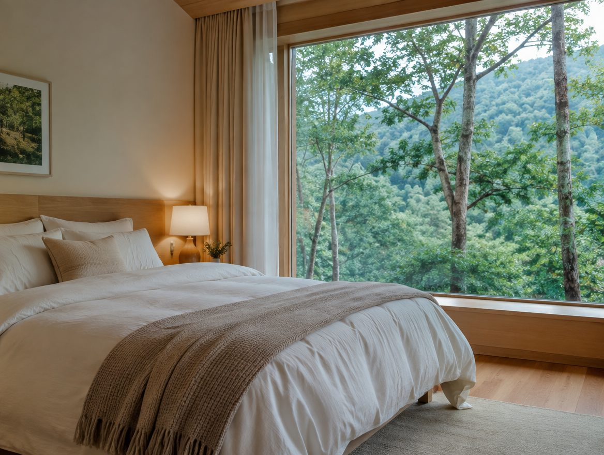

CHOOSE YOUR STAY
우리의 여행에 맞는 방
인원과 침구, 공간 구성을 비교하고 우리에게 맞는 휴식을 선택하세요

ROOM DIRECTION
조용한 둘의 휴식
작은 인원이 차분하게 머무는 객실을 비교하는 유형입니다
- 여행 방식
- 휴식 · 가벼운 대화
- 확인할 조건
- 정원 · 침구 구성 · 객실 위치
- 예약 전
- 날짜별 이용 가능 여부 확인
COMPARE BEFORE BOOKING예쁜 사진 다음에,
예쁜 사진 다음에,
꼭 비교해야 할 것
| 확인 항목 | 작은 인원의 휴식 | 함께하는 여행 |
|---|---|---|
| 정원 · 추가 인원 | 이용 조건 문의 | 최대 정원 · 추가 비용 확인 |
| 침구 · 공간 분리 | 침대 구성 확인 | 침실 · 공용 공간 구성 확인 |
| 시설 · 이용 시간 | 객실별 포함 여부 확인 | 공용 시설 · 동시 이용 조건 확인 |
HOUSE NOTES
예약 전에 읽어두면 좋은 이야기
입실과 퇴실은 어떻게 하나요?
입실·퇴실 시간과 이용 방법을 방문 전에 확인해 주세요
반려동물과 함께할 수 있나요?
가능 여부, 객실 제한, 별도 비용 등 이용 조건 문의이 필요합니다
날짜를 바꾸거나 취소할 때는요?
예약 채널과 상품별 변경·취소 규정을 확인해야 합니다